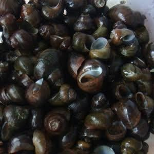
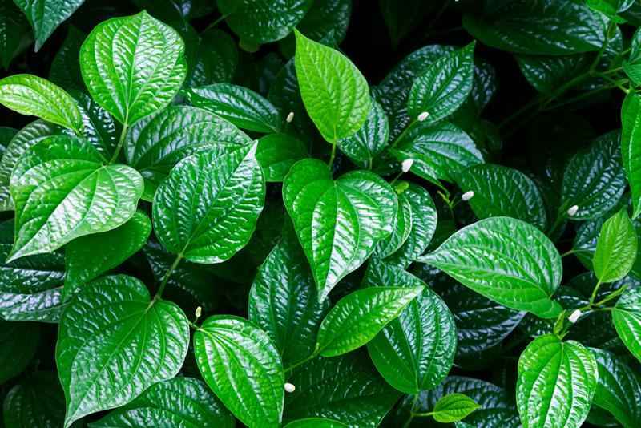
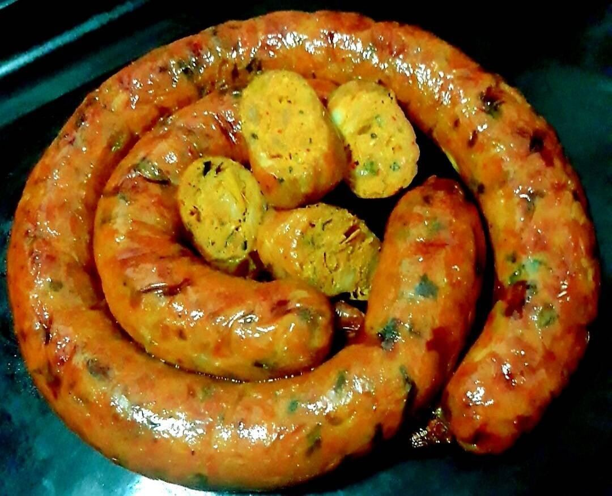
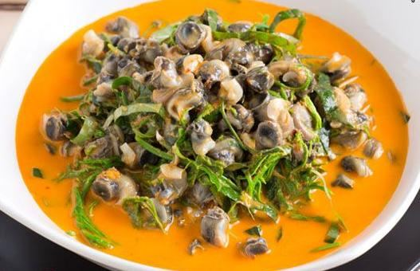
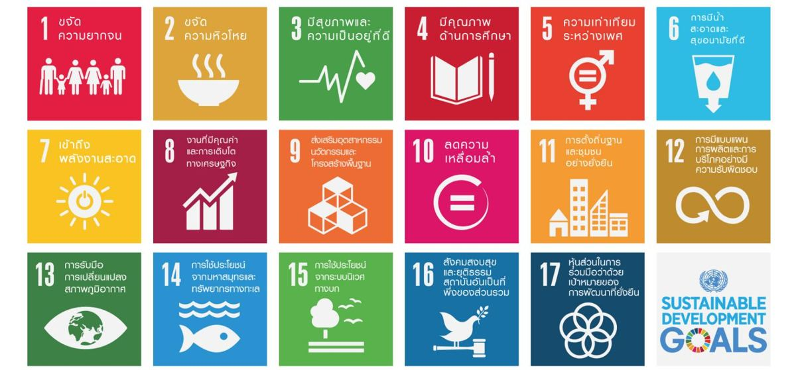

30 คน
กลุ่มตัวอย่างผู้ทดสอบ นักเรียน นักศึกษา ครู และบุคลากรของวิทยาลัย
โครงงานนี้พัฒนาผลิตภัณฑ์ "ไส้อั่วแกงหอยขมใบชะพลู" โดยนำอาหารพื้นบ้าน แกงหอยขมใบชะพลู มาประยุกต์เป็นไส้อั่ว ผ่านการทดลอง 3 ส่วน คือ (1) หาปริมาณใบชะพลูที่เหมาะสม (2) หาปริมาณแป้งมันที่เหมาะสมต่อเนื้อสัมผัส และ (3) ศึกษาอายุการเก็บรักษาแบบแช่แข็งบรรจุสุญญากาศ ผลการทดลองพบว่าสูตรที่ใช้ใบชะพลูร้อยละ 10 และแป้งมันร้อยละ 4 ได้รับคะแนนความชอบรวมสูงสุด และผลิตภัณฑ์สามารถเก็บรักษาได้นาน 2 เดือนโดยยังผ่านมาตรฐานคุณภาพ
แกงหอยขมใบชะพลูเป็นอาหารพื้นบ้านที่สืบทอดจากภูมิปัญญาท้องถิ่น หอยขมเป็นวัตถุดิบราคาย่อมเยาที่หาได้ง่ายในแหล่งน้ำธรรมชาติ อุดมด้วยโปรตีนและแคลเซียม ส่วนใบชะพลูเป็นพืชสมุนไพรที่มีกลิ่นหอมเฉพาะตัวและมีสารต้านอนุมูลอิสระ ขณะที่ไส้อั่วเป็นอาหารแปรรูปของภาคเหนือที่ได้รับความนิยมแพร่หลาย คณะผู้จัดทำโครงงานจึงนำวัตถุดิบทั้งสองมาประยุกต์เป็นผลิตภัณฑ์ไส้อั่วรูปแบบใหม่ เพื่อเพิ่มมูลค่าให้วัตถุดิบท้องถิ่นและต่อยอดภูมิปัญญาชุมชนให้ทันสมัยขึ้น สอดคล้องกับเป้าหมายการพัฒนาที่ยั่งยืน (SDGs) หลายข้อ




